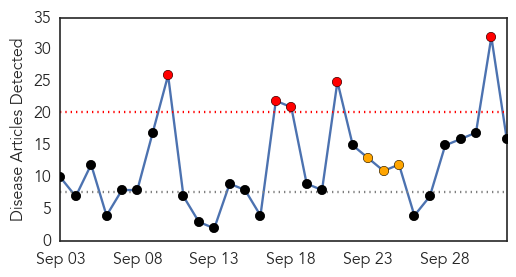
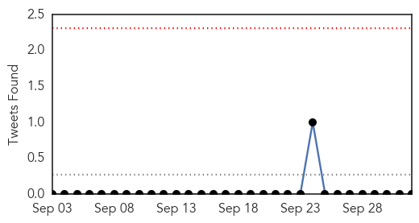
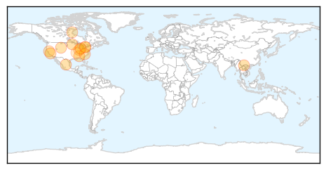
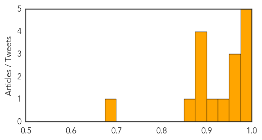
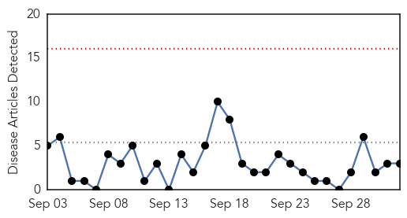
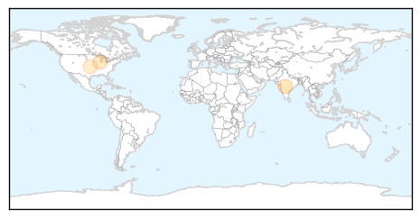
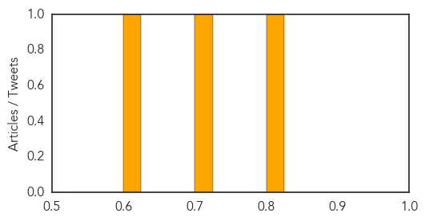

Influenza
30-Day Web Trend
5 alerts, 3 warnings

30-Day Twitter Trend
0 alerts, 0 warnings

Article Locations
Article Confidences
Top Articles:
- 0.999
- October marks the start of flu season
- 0.996
- Experts say this year’s vaccine should do the trick
- 0.994
- Lake County Health Department Encourages Residents to Get Flu Shots
- 0.983
- Achoo! Could it be the Flu?
- 0.980
- News briefs - Oct. 1 edition
- 0.972
- UNMH offering free flu shots in anticipation of flu season
- 0.972
- Flu Scan for Oct 01, 2015
- 0.970
- Don't Overlook the Flu, Get Vaccinated
- 0.935
- Madison County Health Department kicks off annual free flu shot clinics
- 0.908
- North Carolina reports first flu death of season
- 0.900
- Mandatory flu shots for Kaiser hospital employees in new 3-year contract
- 0.895
- Today's stories from newspapers in Flamborough
- 0.895
- Today's stories from newspapers in Flamborough
- 0.895
- Today's stories from newspapers in Flamborough
- 0.861
- ViroCap Test: One solution to detect all viruses in humans and animals
- 0.681
- Dexter Daily Statesman: Local News: Avian flu...potential disaster (10
Top Tweets:
-
No tweets found for Oct 02, 2015
Measles
30-Day Web Trend
0 alerts, 0 warnings

30-Day Twitter Trend
0 alerts, 0 warnings

Article Locations
Article Confidences
Top Articles:
Top Tweets:
-
No tweets found for Oct 02, 2015